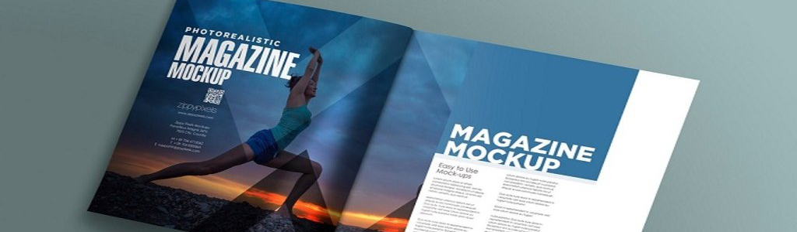

Magazine

- Digital magazine can distributed information globally and broaden discussions among people.
- Digital magazine promote more instantly and directly interpersonal communications.
- Haptic communication in print magazines strengthens readership.
- Innovative tool for classroom teaching among children.
- College or school magazines help students to become successful.
- College or school magazines wider open discussions on school policies and education systems.
- Health and science magazines encourages a better health outcome among people.
- Digital magazines lack tactility and portability (of printed paper).
- Fashion magazines cause people dissatisfied with body image.
- Fashion magazines can cause eating disorder and increase health risks.